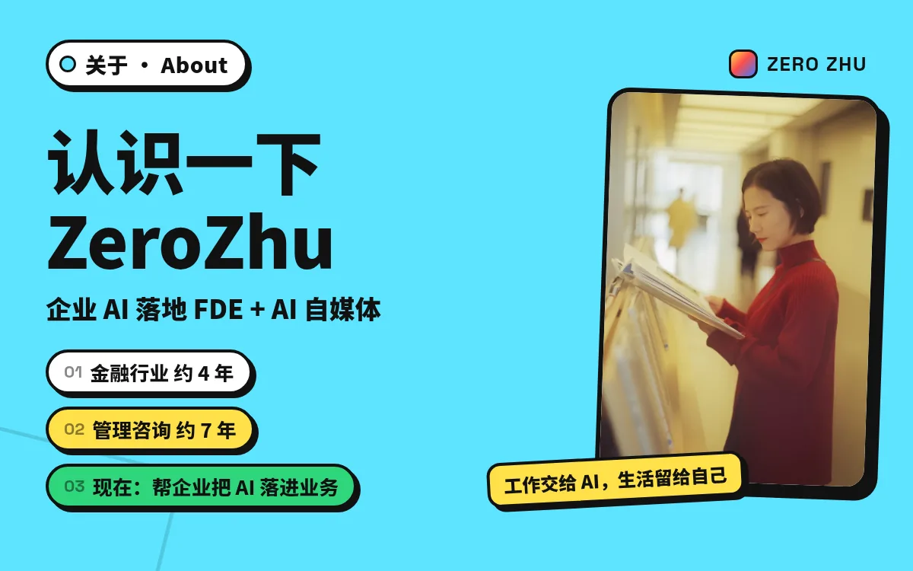
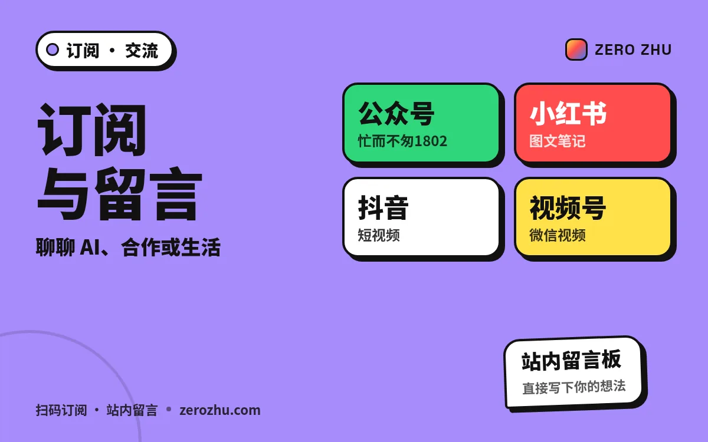
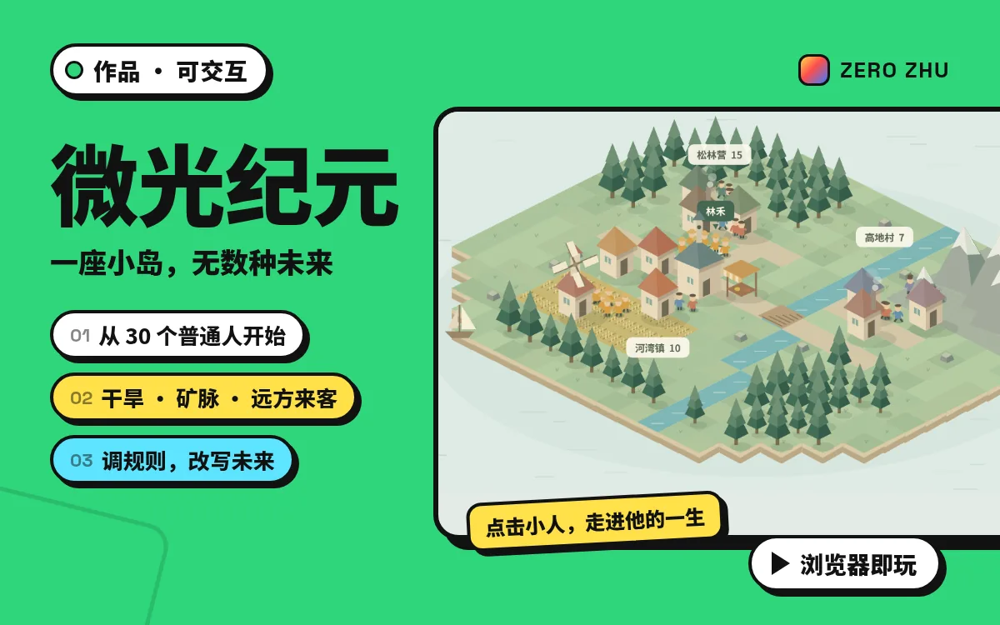
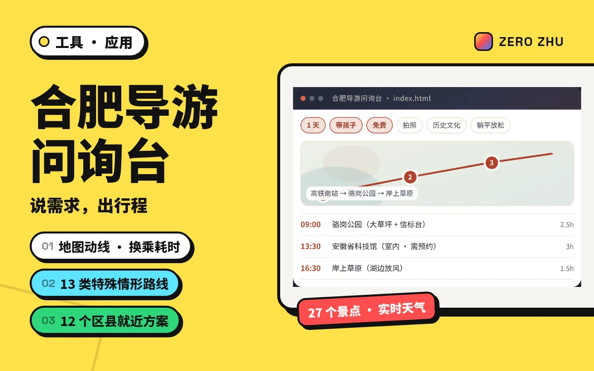
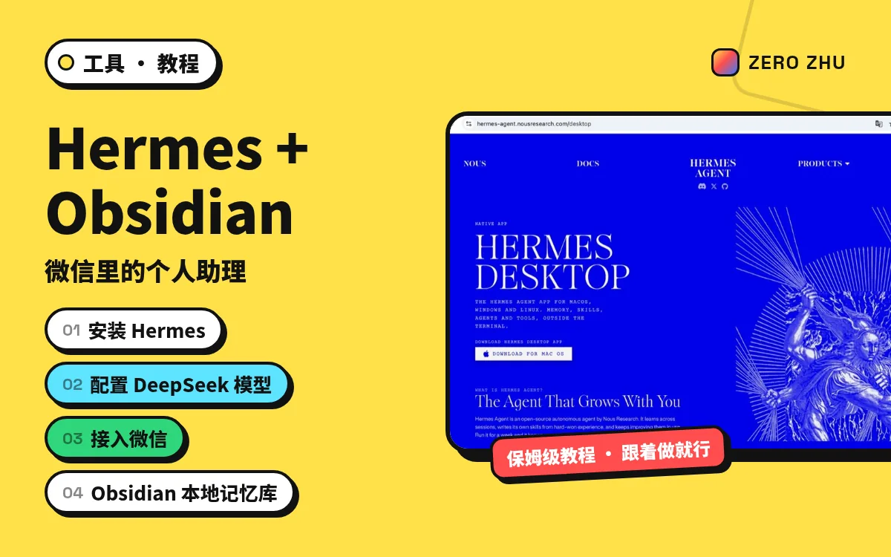

ZERO ZHU

AI 是助手，不是替代者
01

企业 AI 落地 · FDE
Me

订阅与交流

微光纪元
Play

合肥导游问询台
Go
精选入口
用色块做导航，信息一眼扫到 新 · 创作
新 · 创作
服务器买了，Agent 建了：下一代 AI 来了怎么办？
模型会更新、硬件会折旧：把数据、接口、规则和验收标准留成可继承的资产。
 新 · 培训复盘
新 · 培训复盘
数据敏感型企业怎么做AI转型落地
烟草系统培训复盘：数据分级、统一平台、场景矩阵，先小步见效再谈投入。

工具分享Hermes + Obsidian 个人助理
微信里随叫随到的助理：下载配置、接微信、挂本地知识库。
作品 · 可交互微光纪元
测试 GPT‑6 Astra 时做的小岛文明：点居民、拨事件、看规则如何改写未来。
 音乐
音乐
AI时代，我不怕
写给 AI 时代的歌：不焦虑被替代，而是学会把工作交给 AI，把生活留给自己。
 新 · 创作
新 · 创作
企业买到的是AI使用权，还是AI转型能力？
席位与积分买到使用权；改变业务结果还要靠流程重塑。
 新 · 创作
新 · 创作
当AI让技术平权化，我们真正的核心能力是什么？
公开培训之后：执行力贬值，选问题与品味才更稀缺。
创作
AI 应该是助手，而不是替代者
把 AI 放回工具位：放大人的判断力，而不是抢走表达本身。
关于关于我
企业 AI 落地 · FDE的人。几句话认识就好。
交流订阅与留言
公众号、小红书、抖音，站内留言板可直接写下想法。